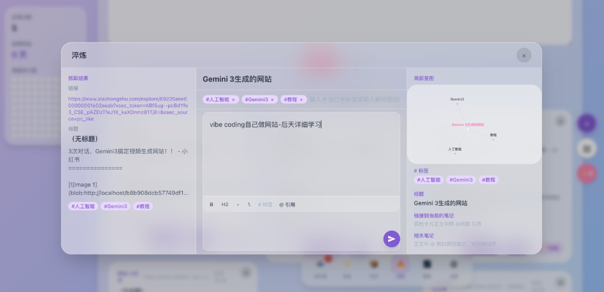
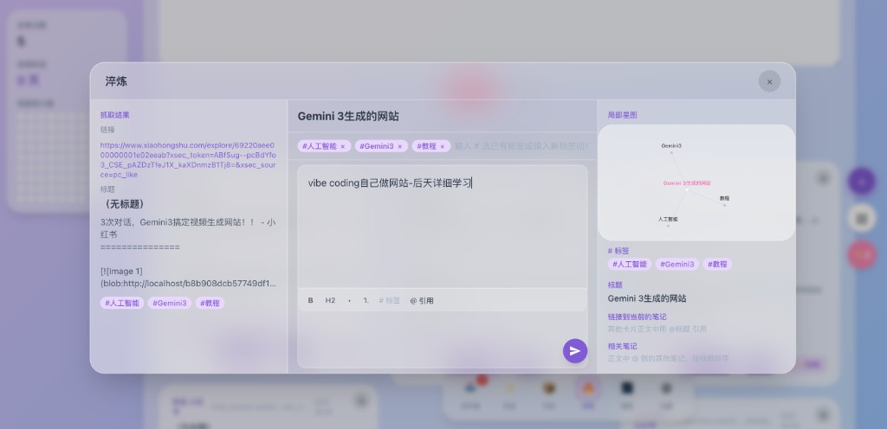

南洋理工大学
硕士 · 管理经济学
AI Researcher ｜ Product Thinker ｜ Growth Practitioner
欢迎来到我的个人宇宙 (Welcome to my personal universe)
Enter Universe
AI Researcher · Product Thinker · Growth Practitioner
具备扎实的用户增长与商业化策略背景，致力于用 AI 赋能业务增长，连接技术边界与商业价值。

关于我
我是一名专注于 AI 增长与商业化策略的产品实践者。目前在南洋理工大学攻读管理经济学，正努力将商业经济逻辑与技术实操深度结合。在 Meshy.AI、字节跳动、百度等团队的实习过程中沉淀了增长和商业化策略经验。我坚持尝试利用 AI 技术赋能效率提升，驱动更具规模感与确定性的用户和商业增长。性格上，学习与适应能力突出且执行力强（ESTJ），兼具良好的逻辑表达与资源协调能力，能在高压环境下以结果导向保障项目交付。
硕士 · 管理经济学
2026.09 - 2027.06
本科 · 会计学 · GPA 3.7/5 (TOP 20%)
2020.09 - 2024.06
相关课程：管理经济学、线性代数、微积分、概率论与数理统计、计量经济学、Python 程序设计
增长策略产品经理
2025.10 - 至今
增长策略产品经理
2025.07 - 2025.10
广告策略产品经理
2025.02 - 2025.07
战略投资部 · 商业化广告组战略分析师
2024.04 - 2024.09
战略咨询 · 战略分析师
2023.12 - 2024.03
Python, SQL, AI Coding
Machine Learning, Statistical Analysis
Cursor, Figma, Tableau, Excel, PowerPoint
作品集

将碎片化收藏转化为结构化知识资产的 AI 炼金术。

通过「扭蛋抽签」仪式感终结选择困难，实现数据驱动的玄学减脂。
重塑分享决策链路，通过差异化媒介适配实现病毒式增长。

将 G2 平台繁琐的原始评论处理流程从「小时级」压缩至「秒级」，实现 AI 驱动的用户画像深度分析。
 


炼金炉是一款专注于「知识内化」的碎片化信息管理工具。它通过将「原始素材抓取」与「个人深度创作」彻底隔离，解决用户在微信、小红书、推特等多平台碎片化收藏、后期「找不到、不深度读」的痛点。
1. 定义「收纳-炼金-淬炼-归档」闭环，利用 AI 自动提取标题、生成标签并归类；同时支持用户修改标签、重写标题及记录正文心得，解决收藏夹内容杂乱、无法直接复用的痛点。
2. 利用 AI Coding 实现动态星图，将笔记标签与标题转化为互联的节点，并支持标题间的逻辑联动；通过可视化的关系网打破「信息孤岛」，帮助用户从全局视角理清不同平台素材间的关联。
决策疲劳：深度选择困难症在点餐上平均耗时 30 分钟，导致饥饿感带来的「报复性饮食」。
减脂压力：用户在控制饮食时对卡路里高度敏感，面对海量外卖时存在严重的焦虑感。
心理补偿：用户倾向于将决策压力转移给「命运」或「玄学」，以缓解自律带来的枯燥感。
「扭蛋机」决策引擎：将复杂的筛选逻辑包装为「请示天意」的抽签交互，通过「一键交付命运」极大地缩短决策链路。
双重策略模式：设计「减脂模式」（严格控卡）与「放纵模式」（合理区间内释放需求），满足用户间歇性自律心理。
反馈闭环：同步记录金额与饮食热量，将「糊涂账」转化为可视化报表，通过数据看板（工作日 vs 周末）实现用户行为的自我修正。
针对用户体验不足——从可分享的方式和内容看，缺乏吸引力，只能分享文字和链接的痛点，负责落地海报生成与动态 OG 预览机制，并针对 X、WhatsApp 等社交平台进行差异化形态适配。
场景入口：全新的「福利中心」分享组件。用户点击「分享」时唤起沉浸式的「双向奔赴」分享弹窗。核心激励文案：「分享链接邀请新朋友，你和好友都能免费获得 1 个月的 Pro 会员权益！」通过双向互利降低社交压力、提升分享意愿。
多维分享矩阵：弹窗下方集成一站式分享渠道，支持「拷贝链接」「邮件」及「精美海报生成」，满足不同社交圈层展示需求。
平台像素级适配：X (Twitter)——静态预览升级为带播放按钮的动态 OG 图；WhatsApp / Facebook / LinkedIn——自动生成精美 OG Card；Telegram——分享高画质 GIF 或短视频，未点击即可预览核心交互。

噪声干扰：G2 导出的原始数据包含大量被拒绝（Rejected）的无效评论，人工筛选耗时耗力。
重复劳动：缺乏增量处理机制，每周更新数据时需重新审阅旧内容。
深度缺失：原始评论仅停留在文字表面，难以快速转化为结构化的行业分布洞察。
智能过滤层：建立自动化过滤逻辑，一键剔除低价值信息，确保后续分析数据的纯净度。
增量清洗机制：通过对比历史数据库，自动识别并锁定本周新增评论，实现「仅处理增量」的敏捷工作流。
AI 深度增强 (LLM)：接入 Gemini 大模型，进行精准的用户行业分类，并自动生成深度洞察报告与回复草稿，将数据处理推向「决策辅助」阶段。
思考与反思
探索星辰大海，也死磕每一个增长。期待与你交流 AI 或产品思维！

扫码添加微信